Թույլտվածքներ և նստվածքներ
Դասախոսության նշումները՝ թվայնացված տետրի լուսանկարներից
1Փոխարինելիություն (Հ.)
Հիմնական հասկացություններ
Հ-ն միևնույն անվան պատրաստվածքների …չընթերցվեց… հատկությունն է …։
Հ-ն լինում է լրիվ, ոչ լրիվ և ֆունկցիոնալ։
- Լրիվ Հ.՝ առանց …չընթերցվեց…
- Ոչ լրիվ Հ.՝ …չընթերցվեց…
- Ֆունկցիոնալ Հ.՝ …չընթերցվեց…
… բաժանվում են 2 հիմն. խմբի՝ անցքեր և լիսեռներ։ →
📷 Տետրի էջը
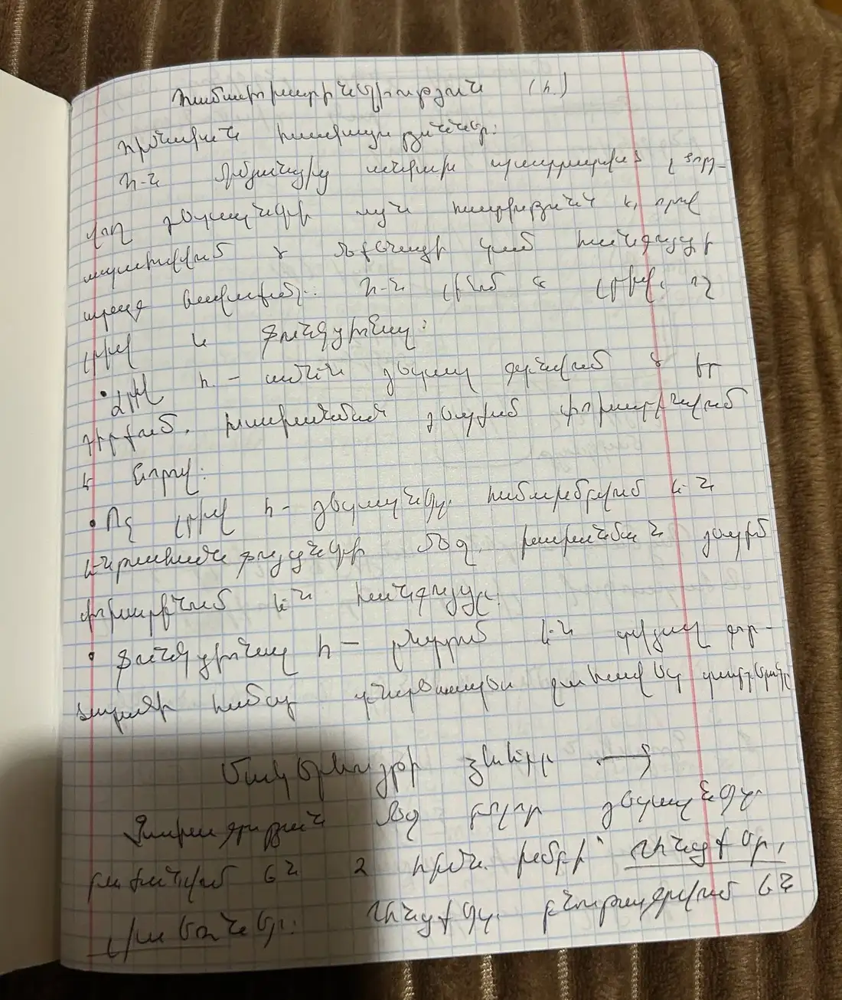
2Անցքեր և լիսեռներ
Գլանային …չընթերցվեց…, որոնք … (լիսեռ)։
Ընդգրկող …չընթերցվեց…, իսկ … լիսեռ …։
Միացում. ընդգրկող մակերևույթ՝ անցք (A), ընդգրկվող մակերևույթ՝ լիսեռ (B)։
Պայմանականորեն … անցքեր, … լիսեռ …չընթերցվեց…։
📷 Տետրի էջերը
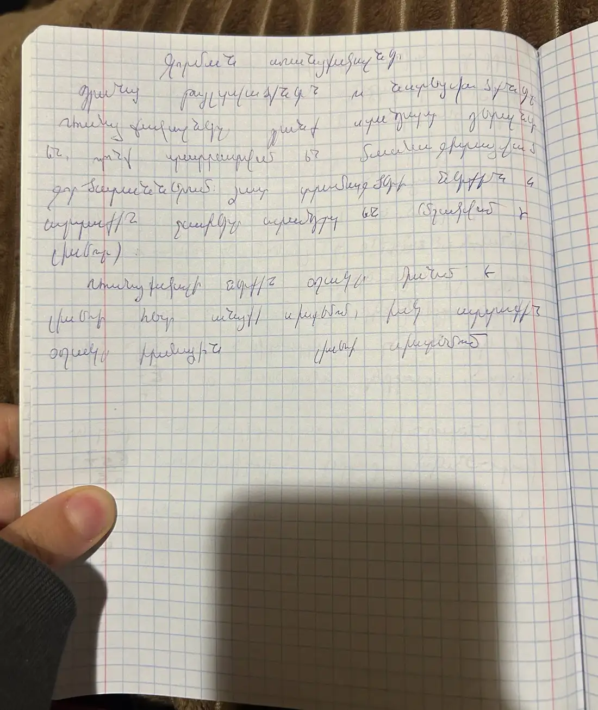
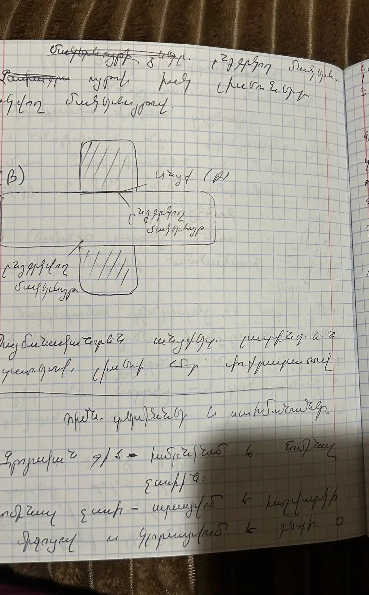
3Հիմնական հասկացություններ և սահմանումներ
- Անվանական չափ d/D՝ հաշվարկված և կլորացված չափը։
- Իրական չափ՝ …չընթերցվեց…
- … չափ՝ … սխալանքով …։
- Սահմանային չափեր՝ չափեր, որոնց միջև …։ maximum, minimum (dmax, dmin) (լիսեռի համար)։
- Թույլտվածք (допуск)՝ սահմանային չափերի տարբերությունն է, նշ.՝ T։ Օր.՝ TD՝ անցքի, Td՝ լիսեռի համար։
- Թույլտվածքի դաշտի գրաֆիկ.
- Շեղում՝ սահմանային և անվանական չափերի տարբերությունն է … (վերին և ստորին)։
| Անցք (A) | EI՝ max, ES՝ min |
|---|---|
| Լիսեռ (b) | ei՝ max, es՝ min |
Ստուգեք. տետրում EI/ei-ն կապված է max-ի, ES/es-ը՝ min-ի հետ։ ISO ստանդարտում հակառակն է՝ ES/es-ը վերին շեղումն է (Dmax = D + ES), EI/ei-ն՝ ստորին։ Համեմատեք դասախոսի նշագրման հետ։
📷 Տետրի էջերը
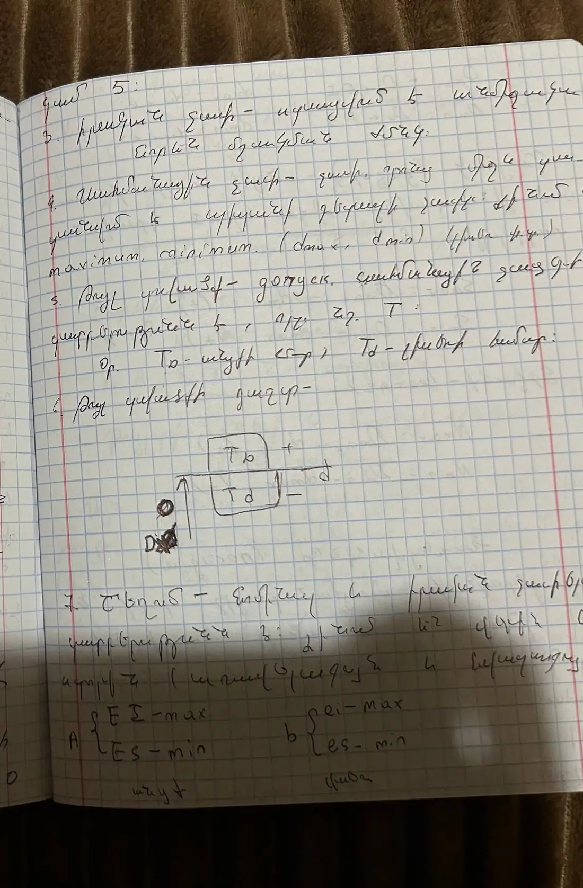
4Սահմանային չափեր, ճեղք, ձգվածք
Dmin = Dն + ES dmin = dն + es
Ճեղք (зазор)՝ անցքի և լիսեռի տրամագծային չափերի … տարբերությունը։ Նշ.՝ S։
Smin = Dmin − dmax (+) միշտ դրական
Ձգվածք (натяг)
Nmin = Dmin − dmax (−)
Ստուգեք. ձգվածքի բանաձևերը տետրում գրված են ճեղքի բանաձևերի նման՝ (−) նշանով։ Սովորաբար գրում են Nmax = dmax − Dmin, Nmin = dmin − Dmax։
📷 Տետրի էջը
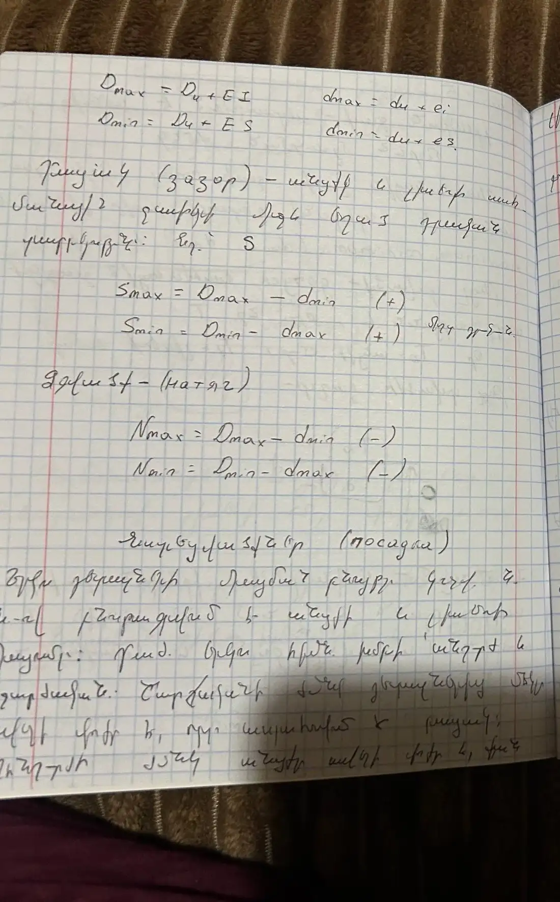
5Նստվածքներ (посадка)
Երկու դետալների միացման բնույթը … բնորոշվում է անցքի և լիսեռի չափերով։ … հիմն. խմբի՝ ճեղքով և ձգվածքով։ …չընթերցվեց…
…չընթերցվեց… լիսեռը։ …
A, B, C, D, E, F, G, H… → ճեղքով …
Հիմնականը՝ H։
J, K, N, M՝ անցումային
P, R, S, T … Z՝ ձգվածքային
📷 Տետրի էջերը
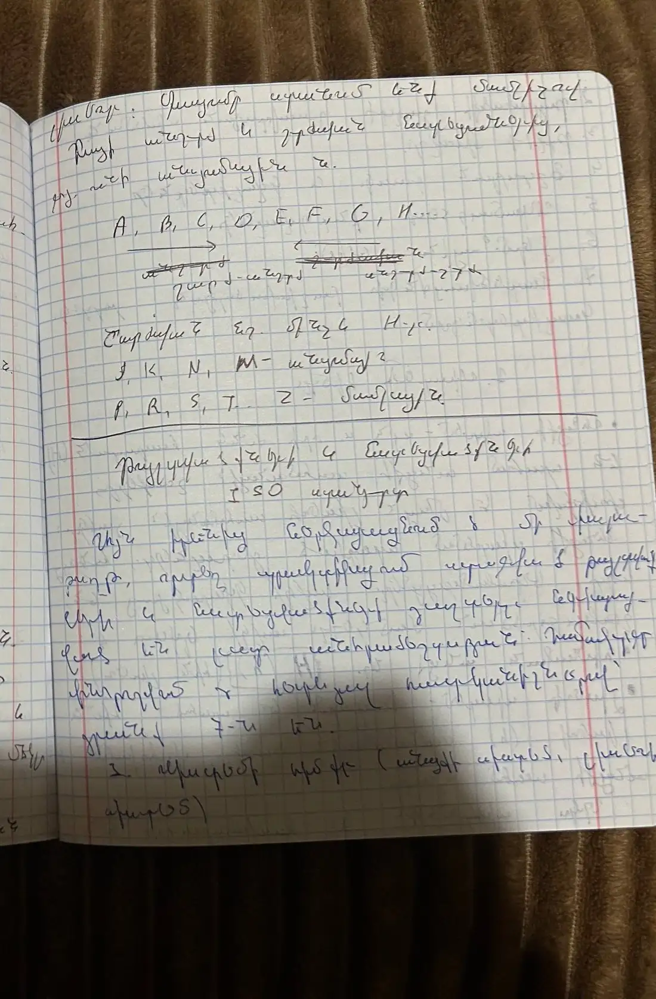
6Թույլտվածքների և նստվածքների ISO սիստեմը
…չընթերցվեց… թույլտվածքների և նստվածքների … հիմնական տարրերը 7-ն են.
- Սիստեմի ձևը (անցքի սիստեմ, լիսեռի սիստեմ)
- Թույլտվածքի դաշտի դասավորության սխեման
- Թույլտվածքի միավոր
- Ճշտության դասեր և կվալիտետներ
- Անվանական չափերի միջակայքեր
- Ջերմաստիճանային ռեժիմ
- Նստվածքների …
1. Սիստեմի ձևը
- Անցքի սիստեմ՝ … հաստատուն (H) են մնում անցքի սահմանային շեղերը, փոփոխվում է միայն լիսեռի սահմանային շեղերը։ …չընթերցվեց…
- Հիմնական անցք՝ նշ. H (h) (հիմն. լիսեռ)
- Լիսեռի սիստեմ՝ հաստատուն են մնում հիմն. լիսեռի (h) սահմանային շեղերը, փոփոխվում են անցքի սահմ. շեղերը։
…այս էջի շարունակությունը դժվար ընթեռնելի է, տե՛ս լուսանկարը…
2. Թույլտվածքի դաշտի դասավորության սխեման
Ø50H-ի վերին շեղումը տետրում ամբողջական գրված չէ («+0»)։
3. Թույլտվածքի միավոր
1–500 մմ չափերի համար … ISO …չընթերցվեց…։ Նշ.՝ i։
Dմիջ՝ միջակայքի միջին տրամագիծը, մմ. i՝ թույլտվածքի միավոր, մկմ։
4. Ճշտության դասեր և կվալիտետներ
00, 01, 1, 2 … 17 (19). … սահմանված է 19 (21) կվալիտետ։
4–12 կվալիտետները օգտագործվում են …չընթերցվեց…։ 5–16-ը …։ 15-ից … չափերի։
5. Անվանական չափերի միջակայքեր
Չափերը բաժանված են ….
- Փոքր չափեր (մինչև 1 մմ)
- Միջին չափեր (1–500 մմ)
- Մեծ չափեր (500–3150 մմ)
6. Ջերմաստիճանային ռեժիմ
…չընթերցվեց… 20 °C։
7. Նստվածքների …
…չընթերցվեց…
📷 Տետրի էջերը
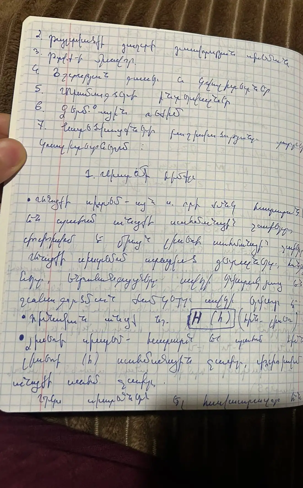
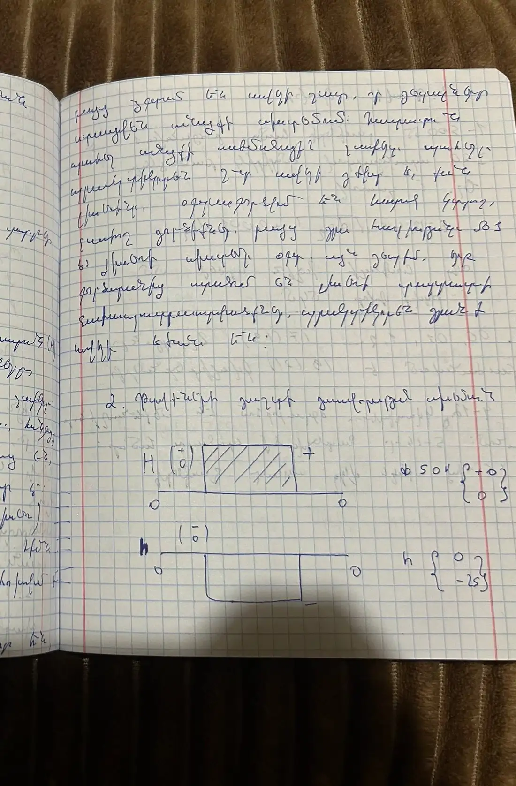
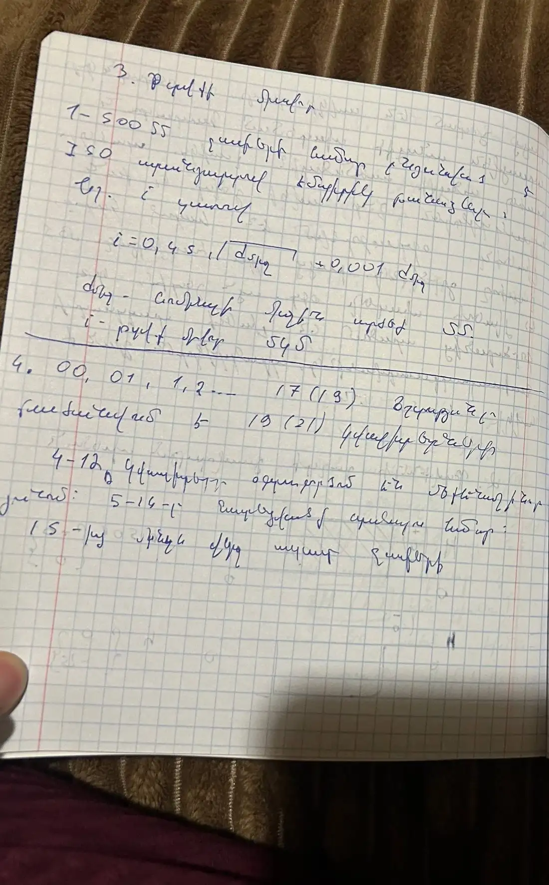
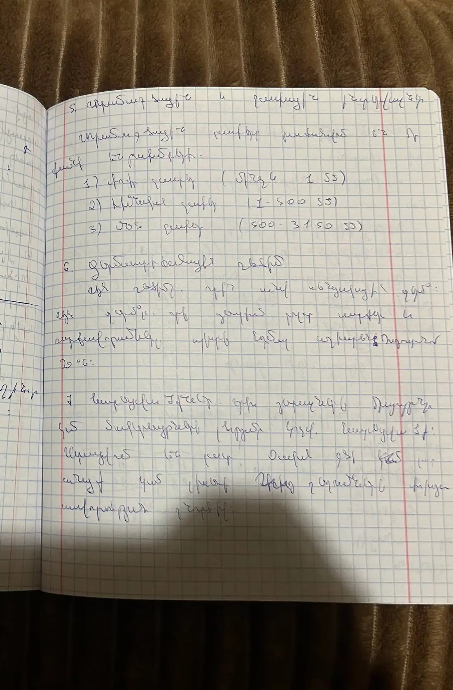
7ОСТ սիստեմը, կոմբինացված նստվածքներ
ОСТ.
- Սիստեմի ձևը (անցքի սիստեմ, լիսեռի սիստեմ)
- Թույլտվածքների դաշտերի դասավորության սխեման
- Թույլտվածքի միավոր
- Ճշտության դասեր (1, 2, 2ա, 3, 3ա, 4, 5, 7, 8, 9, 10)
…չընթերցվեց…
Նստվածքների …
… լինում են … և …։
… նշանակումը. H7e8, H9d9
…չընթերցվեց… անցքի և լիսեռի …։
Կոմբինացված նստվածքներ
… լինում են 3 խումբ.
- …, օր.՝ E7f7
- … G7n5 (նշանակումը ստուգեք)
- Անցքը և լիսեռը …. H7e8, E8h6
📷 Տետրի էջերը
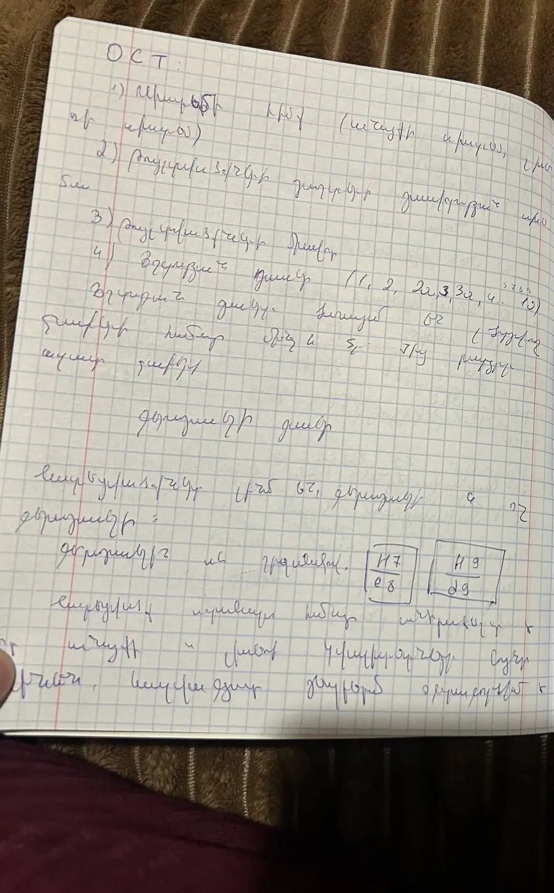
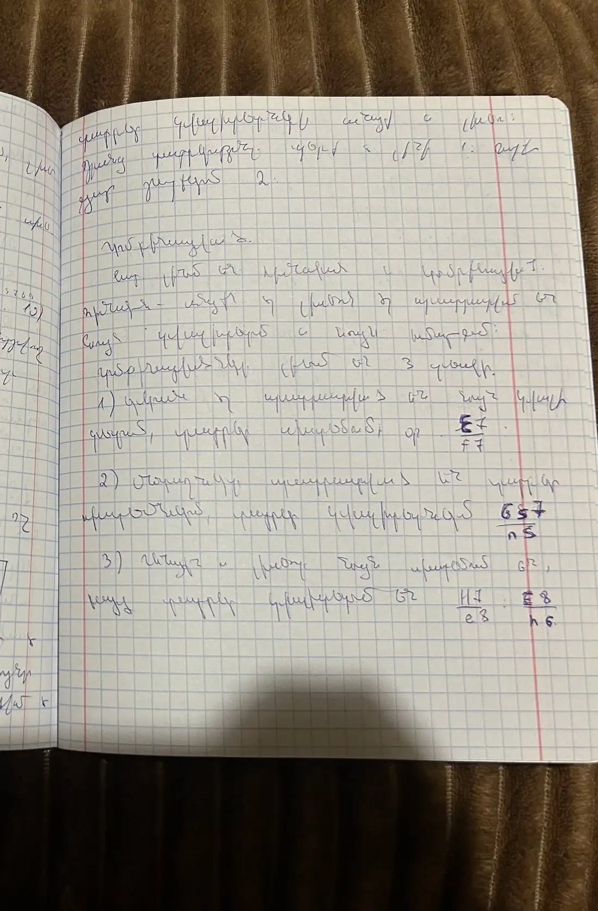